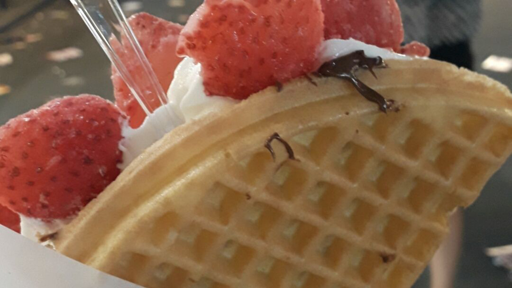

Devil's Sweet Strawberry Waffle (악마의 딸기 와플) at Waffle University (와플대학)
서울특별시 성북구 아리랑로 36, 1층 101호
Arirangro 36, 1F, 101, Seongbuk-gu, Seoul, South Korea

Photo Attribution: received permission to use photos from original photographer Kaitlin Beranek | Cropped and resized from original
Toast Sandwich (토스트 샌드위치) at Isaac Toast (이삭토스트)
서울 특별시 중구 명동 토게로 105 번지
105 Toegye-ro, Myeong-dong, Jung-gu, Seoul, South Korea
Photo Attribution: received permission to use photos from original photographer Amy Fu | Cropped and resized from original
Fried Rice (볶음밥) at Cafe Anouk (카페 아눅)
서울시 성북구 안암동5가 15-82 1층
1 floor 15-82 Anam-dong 5-ga, Seongbuk-gu, Seoul, South Korea
Photo Attribution: received permission to use photos from original photographer Amy Fu | Cropped and resized from original
Fondant Chocolat Mug Cake (퐁당쇼콜라) at Café Bresson (블랙번즈)
서울시 동대문구 재기동 안암로 22 길
6 Anam-ro 22-gil, Jegi-dong, Dongdaemun-gu, Seoul, South Korea
Photo Attribution: received permission to use photos from original photographer Amy Fu | Cropped and resized from original